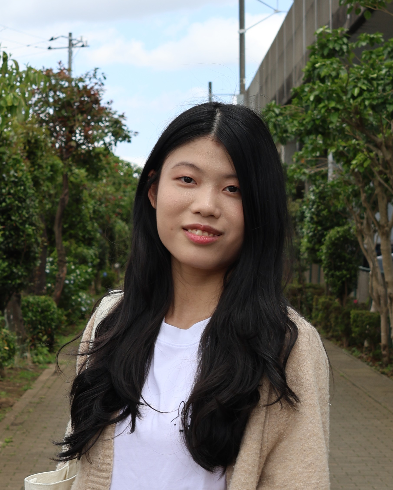

Product & UI/UX designer with a background in illustration and graphic design — I like solving problems visually, then making sure they actually work.

I'm studying Information Science with a User Experience concentration at Cornell (class of 2029). I came to product design through drawing, painting, and sculpture, and that background is still how I work: I sketch to think, and I care as much about how a screen feels as whether it functions.
Most recently I was a UI/UX design intern at Settlyfe, an AI-powered rental platform, where I led an end-to-end redesign of the in-app services portal and designed its AI document features. I also design promotional graphics for Cornell Digital Tech & Innovation, and I've consulted for Adobe on how students actually use AI tools — research, journey maps, and KPIs.
I'm looking for product and UX design roles where research, visual craft, and shipping all sit in the same job.